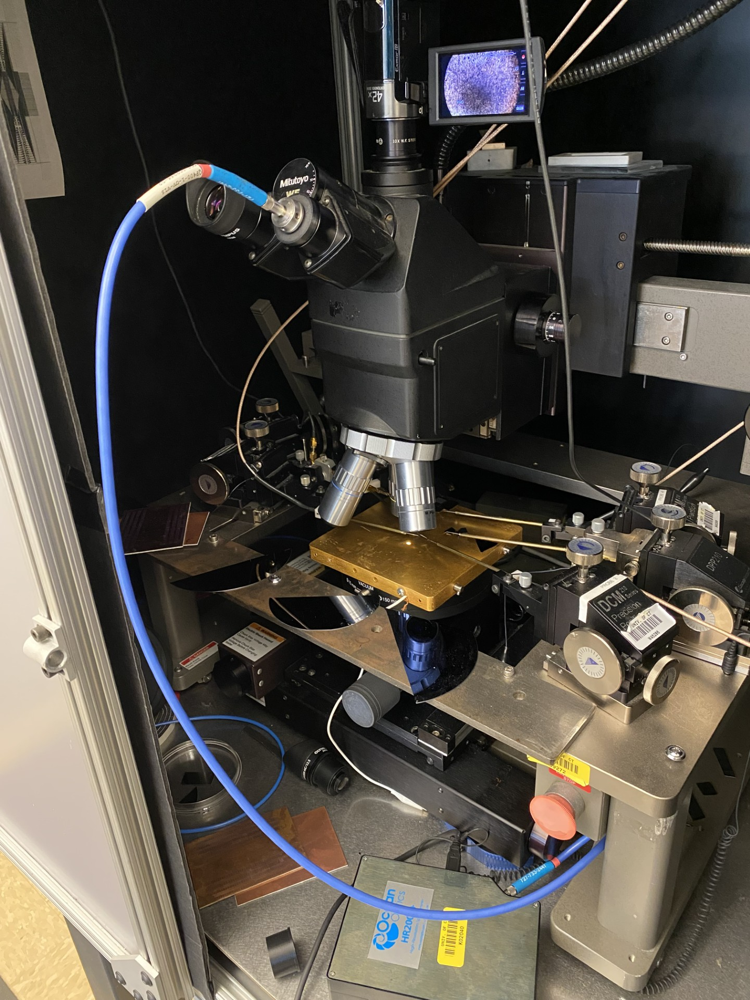
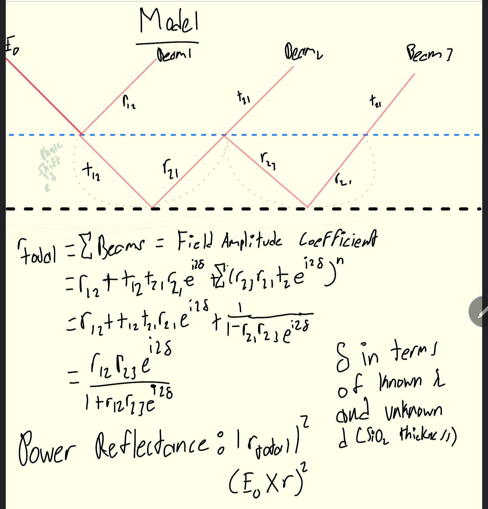
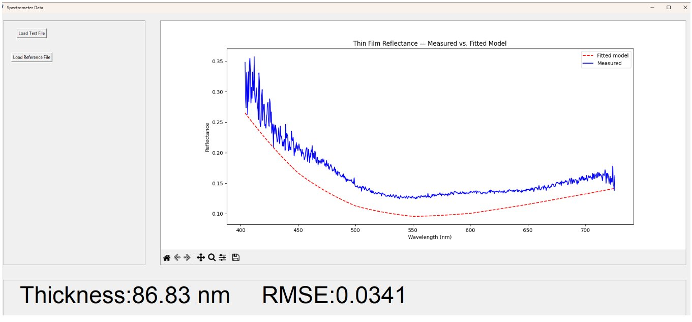
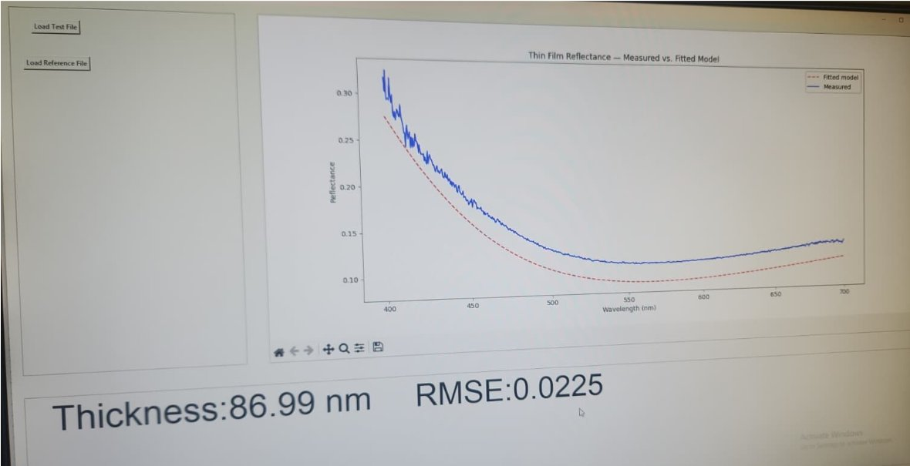

SiO₂ Thickness Measurement
OceanOptics HR2000+ · thin-film interference · Python · least-squares optimization

Overview
When a Silicon wafer grows an oxide layer it picks up a visible color. This thin-film interference can be seen in more common things like soap bubbles. The color for Silicon Oxide however, encodes its thickness. I built a Python tool to decode it by measuring the reflectance spectrum using an OceanOptics HR2000+ and get back a SiO₂ thickness in nanometers.
This runs in Prof. Gokirmak's semiconductor fabrication lab to ensure proper characterization of wafers. Oxide thickness governs dielectric characteristics, anti-contamination, masking capability, and isolation potential. Being able measuring it with any physical contact instrument on a nanometer-scale film is essentially impossible without damaging the structure. This is an optical, non destructive means of measuring the wafer with high accuracy.
The tool targets thin films in the 1–200 nm range, where the oxide is too thin to produce repeating interference fringes. That rules out the Fast Fourier Transform approach used for thicker films. Instead, thickness is extracted by fitting a Fresnel reflection model to the absolute reflectance measurements using bounded least-squares optimization.
How it works / the build
The spectrometer's optical fiber sits in a specialized 3D-printed mount that positions it in the center of a microscope eyepiece tube. A tungsten halogen source illuminates the sample and the HR2000+ captures the reflected spectrum to within 0.2 nm resolution.
Getting clean reflectance. Raw intensity from the spectrometer is contaminated by a wavelength-dependent coefficient S(λ) — baked in from the fiber coupling, lamp spectral shape, and ambient light. It can't be characterized directly, so instead you take a reference measurement off bare silicon with the exact same setup, and it divides out:
Isample = S(λ) × Rsample
ISi = S(λ) × RSi
Isample / ISi = Rsample / RSi
(Rsample / RSi) × RSi = Rsample
Dark measurements — taken with the bulb on but the microscope closed — are subtracted from both sample and reference first. Like zeroing a scale before weighing. Skipping this step can ruin the result.
The Fresnel model. With clean, measured reflectance, I treat the SiO₂ as a thin film on a semi-infinite silicon substrate. Silicon's high absorption means light never reaches the back face, so only two interfaces matter: air–oxide and oxide–silicon. Summing the partial reflections via Fresnel equations gives the total amplitude reflectance coefficient rtotal, which depends only on known wavelength λ and unknown oxide thickness d:
rtotal = (r12 + r23 ei2δ) / (1 + r12r23 ei2δ)
δ = 2π n2(λ) d / λ // phase round-trip through the film
Power Reflectance = |rtotal|2

Wavelength-dependent indices. SiO₂'s index uses the Sellmeier equation with well-documented coefficients. Silicon's complex index (real + imaginary, accounting for absorption) is trickier — I inserted 400 tabulated data points each for the real and imaginary components and fit a linear interpolation across the visible range. Close enough for the application, and much simpler than a full dispersion model.
Optimization. The program runs the model at every wavelength in the measured spectrum and finds the value of d that minimizes error using scipy.optimize.minimize_scalar with method='bounded'. The bounds (currently 1–300 nm) prevent the optimizer from converging on a mirrored fringe cycle that would give the same reflectance curve at the wrong thickness.
Results & measurements
The strongest result is a wafer found in the lab labeled as ~100 nm with unknown fabrication history. Without averaging: 86.83 nm, RMSE 0.0341. After averaging multiple acquisitions before fitting: 86.99 nm, RMSE 0.0225. The fit is visibly cleaner — the noisy UV shoulder in the single-frame data settles out once averaged.
The noise is structural: the halogen lamp is bright enough that the spectrometer needs very short integration times (~50 ms per frame), which makes each acquisition sensitive to ambient fluctuations. Multi-frame averaging before running the optimizer significantly improves the result and is now the standard procedure.
The model currently returns no result outside the 1–300 nm bounds — it fails explicitly rather than silently landing somewhere wrong. The FFT coarse-ranging pass planned for the next version will relax this constraint.
Challenges & what's next
The fixed optimization bounds are the main limitation. SiO₂ reflectance curves repeat at fringe multiples, so the optimizer can converge confidently on the wrong alias if the bounds don't already bracket the true thickness. The solution is a coarse FFT pass first: use the frequency-domain fringe spacing to identify which ~100 nm window the thickness falls in, then let the Fresnel model refine to single-digit nanometers within that window.
The thin-film model also breaks for thicker oxides — once fringes become dense enough to resolve the FFT is actually the better primary tool anyway, and the two methods should hand off automatically. The current code handles neither case gracefully.
Longer term: the model is material-agnostic. With the right index tables it could measure oxide on silver, or nitride stacks, or anything with a well-characterized refractive index. That's prospectively interesting once the thin-SiO₂ case is fully validated.
Gallery

